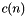
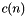
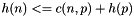
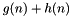
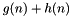

This is my solution for the AID Bachelor Coding Challenge. For the problem description refer to the AID Coding Challenge.pdf. The complete doxygen documentation can be found in the doc folder, see index.html
Result Preview
Travelling from the Rover (ROVER_X, ROVER_Y) to the Bachelor (BACHELOR_X, BACHELOR_Y) will take 2094.51 island seconds (34.9085 island minutes or 0.581809 island hours) on the fastest path.
Travelling from the Bachelor (BACHELOR_X, BACHELOR_Y) to the Wedding (WEDDING_X, WEDDING_Y) will take 1283.17 island seconds (21.3862 island minutes or 0.356436 island hours) on the fastest path.
In total the Audi rover requires 3390.71 island seconds (56.5118 island minutes or 0.941863 island hours) on the fastest path. Details are explained at the end in section Results. To plot the path I added another path() function to the visualizer.cpp.
image html solution_rover_bachelor_wedding.jpg

Algorithm Choice
To find the fastest route from a start to a goal location, I considered Gradient Fields, Dynamic Programming and Graph Search algorithms. I decided to use A* graph search because it is an informed search algorithm, which uses a heuristic function  and relies on dynamic programming to find the shortest path. Compared to Dijkstra, which is an uninformed algorithm. The heuristic provides A*
and relies on dynamic programming to find the shortest path. Compared to Dijkstra, which is an uninformed algorithm. The heuristic provides A*
with an estimate of the minimum cost from any node n to the goal.
Another reason against Gradient descent are the non-convex constraints imposed by the fjords. Gradient descent could easily fall into a lokal minimum and get stuck, which would require methods such as stochastic gradient descent.
Cost Function
The evaluation function  describes the total cost of a node. It consists of the path cost
describes the total cost of a node. It consists of the path cost  , which describes how long it takes the rover to get to node
, which describes how long it takes the rover to get to node  from its start location.
from its start location.
The path cost is calculated using the parent node's path cost  and the step cost , which is the cost of getting from the parent to the current node. The step cost is described in the next section step-cost.
and the step cost , which is the cost of getting from the parent to the current node. The step cost is described in the next section step-cost.
In this challenge the heuristic represents the time it takes the robot to move from a node to the goal. Because the robot can move in eight directions (straight and diagonal) I use an octile distance heuristic , implemented in cPlanner::UpdateHeuristic(). To get a consistent heuristic, I scaled it using the maximum gradient analyzing the elevation of the map and taking the slope into account. The consistency  is checked in planner::cPlanner::HeuristicCheck(). I exported the calculated heuristic values using planner::cPlanner::GenerateHeuristic() in the google test TEST_F(cPlannerTest, heuristic) (see, test_system.cpp).
image html heuristic.jpg

Step Cost Model
Another task was to model the speed of the rover when driving up or downhill. For this purpose I implemented a simple kinematic approach with an inclined plane to model the elevation of the terrain.
image html inclined.jpg

The first step is to calculate the descent or ascent using the height difference between two locations, see planner::cPlanner::UpdateCost(). In this method the pitch angle is calculated next, followed by computing the x or y component of the downhill-slope force using the gravitational force  . In the equation the friction is neglected.
. In the equation the friction is neglected.

While the rover is moving up or downhill it is also moving in the x or y direction and the calculated acceleration  in x direction is acting on the rover. The same equation holds for the y-direction. To get the time it takes the rover to move up or downhill (regarding the two dimensional plane), the planar acceleration is used in the next kinematic equation, where
in x direction is acting on the rover. The same equation holds for the y-direction. To get the time it takes the rover to move up or downhill (regarding the two dimensional plane), the planar acceleration is used in the next kinematic equation, where  refers to the running length in either x or y direction.
refers to the running length in either x or y direction.

The start velocity is neglected in this formula but added to the final height time cost. The time it takes the rover to move one cell is given in the problem description (1 island second moving straight, and  moving diagonal). These step costs are implemented in planner::cPlanner::UpdateCost().
moving diagonal). These step costs are implemented in planner::cPlanner::UpdateCost().
Time and Space Complexity
I avoid allocating two dimensional vectors of the image size. Instead I am using a std::priority_queue priority_queue.h (planner::cPlanner::m_poFrontier) and a std::map. The priority queue is sorted by the score value of the evaluation function  and contains the frontier or border nodes. All expanded nodes are stored in an std::map inside the planner::cPlanner::AStar() method together with their path costs .
and contains the frontier or border nodes. All expanded nodes are stored in an std::map inside the planner::cPlanner::AStar() method together with their path costs .
The priority queue is suggested in all the literature and can access elements in linear time. With a step size of one the algorithm requires approximately 2 minutes to find the best path from rover to bachelor to the wedding. (MacBook Pro 3,3 GHz Intel Core i7, 16 GB 2133 MHz LPDDR3).
Software Organization and Architecture
The advantage of using interfaces is to get different implementations with different behavior but keep the public interface methods the same. I use two interfaces that have a reference to each other, planner::cRoverInterface and planner::cPlannerInterface. The planner::cAudiRover implements planner::cRoverInterface and acts as a factory, creating planner::cPlanner in planner::cRoverInterface::InitializePlanner(). To construct a Rover it requires the map data (elevation.data and
). This data is used int the constructor of planner::cAudiRover to create a new map data structure of type tGraph. In the constructor the array of actions is initizlized which is flexible due to the template parameter of the base class planner::cRoverInterface<size_t Directions>. To start planning, the start and goal positions of the rover need to be set with planner::cRoverInterface::SetStart() and planner::cRoverInterface::SetGoal(). These methods provide the rover with location structs of type tLocation. After the initialization, a call to the method planner::cAudiRover::Summon(), invokes the method planner::cAudiRover::InitializePlanner() which is part of the interface and used to create a new planner object. Finally the the interface method planner::cPlannerInterface::Plan() is called. Possible parameters to planner::cAudiRover::Summon() are the step size planner::cRoverInterface::m_nStepSize and its velocity planner::cRoverInterface::m_nVelocity (not tested testing).
During the the while loop of the AStar() method, debug messages are displayed every 100000 iterations in the following form:
CMake and File Structure
I added a new planner library which gets linked by the main program Bachelor. To get the visualization working during the algorithm I placed the functions inside the main.cpp inside utilities.h and constants.h. The content of other files is documented in the Doxygen documentation.
Coding Style
For the variable naming conventions, I follow the MISRA C standard.
Testing
Note The tests are not completely finished because of the limited time.
I added google gTest version 1.8.0 to the zip file and created a test fixture cPlannerTest in test_fixture.h. It is used to initialize the test by loading the evaluation.data and overrides.data files. Furthermore, the cAudiRover is initialized in the cPlannerTest::SetUp method.
As explained in software the default values for step size and velocity are set to one for both parameters. I tested with different step sizes to reach the goal faster, thereby verifying that the path and island seconds stay the same.
To get intermediate paths from the planner::cPlanner::AStar() I used the provided visualizer::writeBMP() inside AStar(). This results in the following output:
Results
The total travelling time will take 3390.71 island seconds (56.5118 island minutes or 0.941863 island hours) on the fastest path. Hopefully this is enough for the Bachelor to get to his wedding on time.
image html solution_rover_bachelor_wedding.jpg
The best path avoids high mountains and even gets close to see locations (bachelor to wedding) to find the fastest route.
Notice that the heuristic is not always consistent which requires more weight on the  score values. This can also be seen from the f score value which should stay the same because it is the sum of . should increase, while should decrease when moving to the goal. Tuning could be done in planner::cPlanner::CalculateConsistencyFactor(), for example by lowering the gravitational force.
score values. This can also be seen from the f score value which should stay the same because it is the sum of . should increase, while should decrease when moving to the goal. Tuning could be done in planner::cPlanner::CalculateConsistencyFactor(), for example by lowering the gravitational force.
Intermediate Paths
As described above here is the image showing the indermediate path results that were explored by A*.
image html intermediate_rover_bachelor_wedding.bmp

References
- Artificial Intelligence A Modern Approach Third Edition - Stuart Russel, Peter Norvig
- Head First Design Patterns - Eric Freeman, Elisabeth Robson
- https://autonomous-driving.org/2018/08/15/so-you-want-to-be-a-self-driving-car-engineer/
- https://www.linkedin.com/pulse/software-quality-sami-vaaraniemi/
- https://en.wikipedia.org/wiki/A*_search_algorithm
- https://en.wikipedia.org/wiki/Consistent_heuristic
- https://en.wikipedia.org/wiki/Admissible_heuristic
- https://www.redblobgames.com/pathfinding/a-star/introduction.html